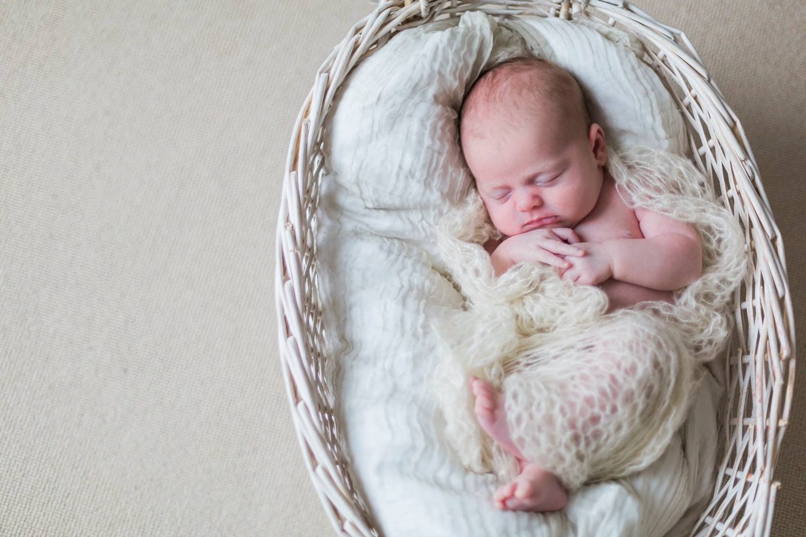

Newborn & Maternity
Beautiful Newborn Photography in London
29 December 2014

You might recognize these faces from a recent maternity photography session I blogged several weeks ago in Hampstead Heath. This lovely couple recently welcomed a beautiful boy into the world and invited me to come to photograph some of their first moments together as a family and some of the fleeting details of their son’s infancy.
I’ve seen the family several times since the birth and one thing I noticed during our time together is how amazingly well parenthood suits these two. The pregnancy glow seems to have transformed seamlessly into a “newborn glow” and a strong sense of calm and joyful peace fills their home. It was wonderful to watch such a loving family spend such beautiful moments together as the amount they adore each other is just so glaringly obvious.
It may just be me, but even the detail shots seem to emanate so much emotion! The second photo and the fourth photo have taken the spot of my two favorite newborn images of all time. Here are some of my other favorites from the newborn photo shoot. I hope you like!
To schedule your newborn photography in London please email me at amy@fantonphotography.com or call me at 07462907790. I look forward to creating beautiful newborn imagery for your family!